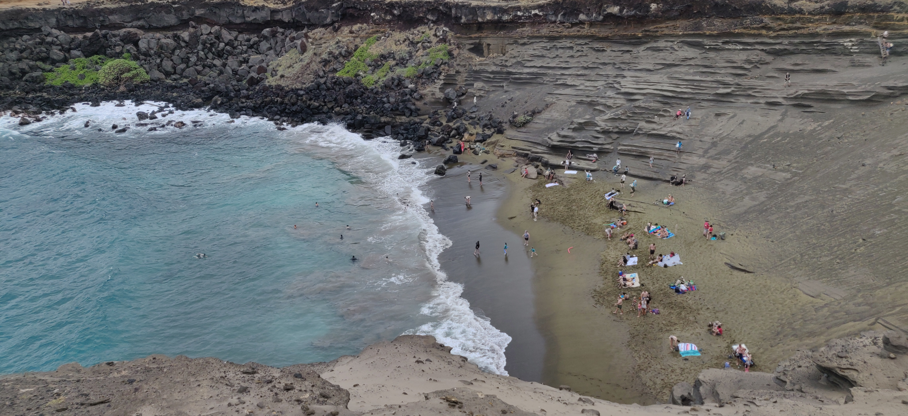
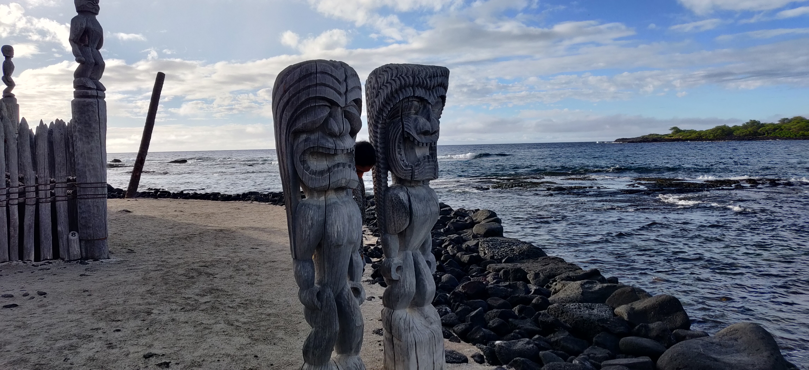
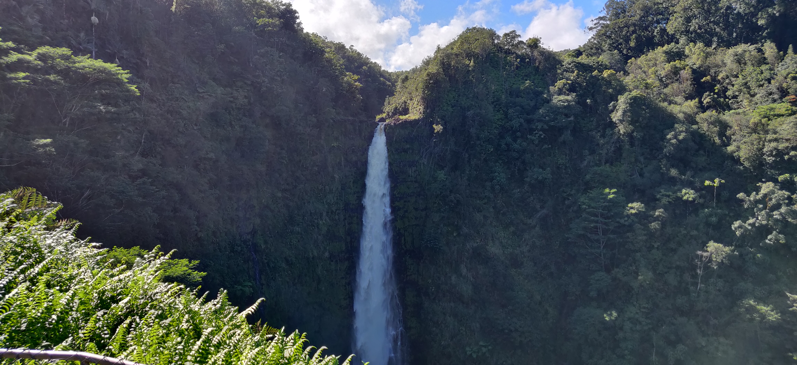
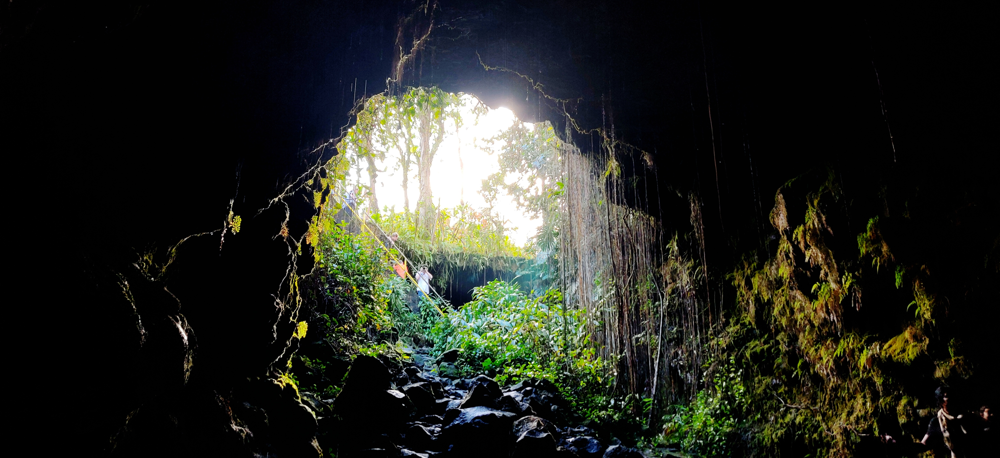
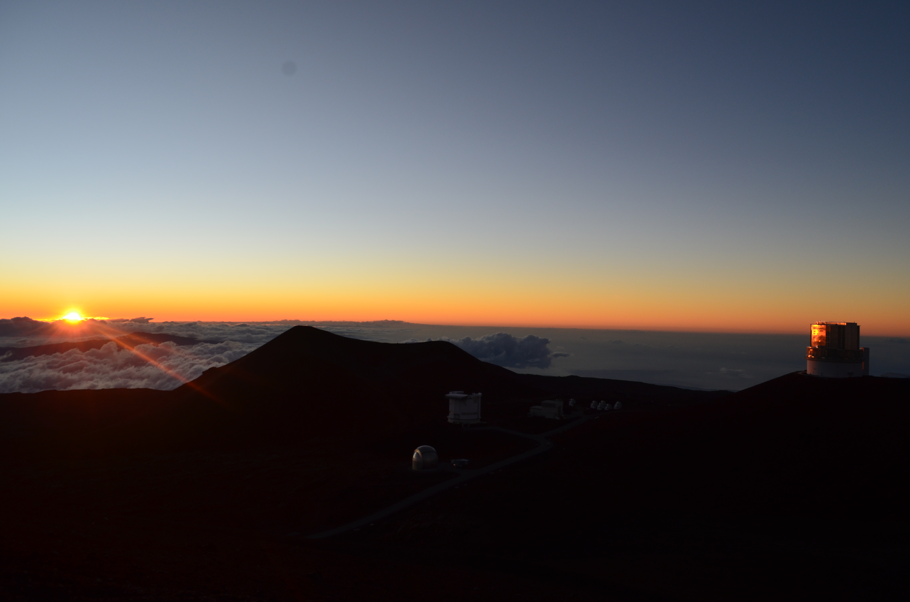
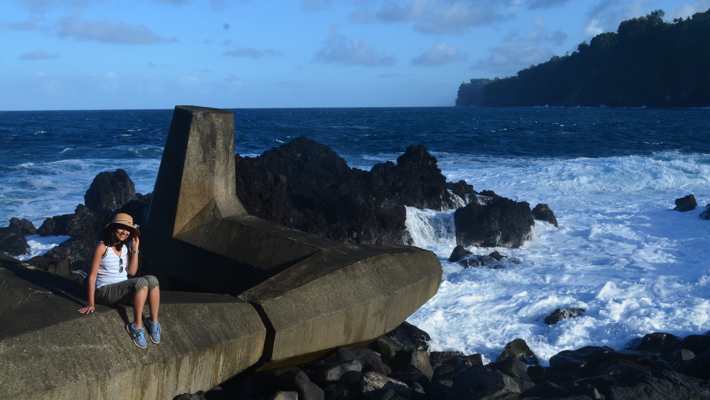

There are lots of resources on Hawaii online, honestly a bit too much and too many options to choose from. We had spent a lot of time in planning and it still underwent changes until the day of the trip which was bound to happen. In this blog, I have tried to give an almost comprehensive trip for 7 days so as to cover the whole island sufficiently well. Big Island comes with extremely diverse landscapes. They say Big Island gets 9 out of 13 climate zones in the world. I have to agree with that, weather was changing by the minute as we traveled through the island. But it never got too cold unless we went up the tallest mountain at a height of 13000 ft.
Things to note:
-
Money/Transactions : Credit card works at most of the places. Keep some cash for tips if you go on any tours/activities or if you stroll into a Farmers Market (you get tasty tropical fruits and local art to buy there).
-
Commute : We did see a public bus in Kailua-Kona but not in all places. You are better off renting a car yourself. You get to go on some breathtaking scenic routes
-
Language : Almost all the roads have Hawaiian names, including the famous landmarks although some have English alternates. You will also hear/read some common words like “Aloha” (for Hi/Hello/Bye) and “Mahalo” (for Thankyou). I would highly recommend greeting in their language. Hawaiians are very warm people we have come to know. :) We will have no issues speaking in English there.
-
Good time to visit : We visited during the last week of December which is apparently the rainiest month, although Big Island doesn’t get as much as some of the other islands. We were lucky to not be hindered by rain for any of our hiking or any other activities. It usually rained in the night or early morning which made the places greener and fresh. But otherwise, summer is the best time to visit the island.
-
Reservations : Needless to say, reservations are to be done well in advance since it is a favorite destination year long.
-
Souvenir Shopping : We found really cool souvenirs at multiple ABC stores in Kailua-Kona and also Wal-Mart has a good collection too in their Souvenir section. Look for farmers’ market where they have beautiful local artifacts for sale.
-
Accomodations : There are quite a few hotels in the prime spots in front of the beach with sea-facing rooms in Kailua Kona and some in Hilo. This time we completely went to AirBnb. Instead of booking one place for all the days, we spread out our reservations. First half of our trip was booked in Kailua-Kona. A couple of days in Pahoa closer to Volcanoes National Park and the next couple of days near Hilo closer to the valley and waterfalls area amidst a rainforest. We could hear the cacaphonous coqui frogs all night long. You could book a single place but it would have lot of driving involved in a single day.
Here are my recommendations to plan a trip to Big Island for 7 days:
Day 1:
-
South Point Beach Park : It is the southern most point of the US. People were fishing. I also read that people love to cliff jump during Summer when the waves are not too rough.
-
Papakolea beach (Green sands beach) : You will find a hand-written board to this beach when you exit out of the South Point Beach Park. There are no proper car parking spots. It was crowded though. There are locals who will stop you at the parking, to take us in their open van, to the Green Sand Beach for 20$ per person that too standing all along. I had underestimated it but after taking the ride I understood why it’s worth 20$. Well, although many people hike to this beach, I strongly recommend to reserve hiking for other even beautiful rain forests or volcano hike. It would be a total of 6miles of a rugged dirt road. The Green Sand Beach is in a cove where you have to climb down. It was a beautiful olive green colored sand beach, one of the only two green sand beaches in the world. 
-
Kailua-Kona downtown: Take a stroll down the Palani Road and the Kailua Pier with ocean water splashing on the road giving cars a natural car wash. It was Christmas day and there were lights, decorations with huge Christmas tree. We found a wonderful sea facing restaurant in Kailua-Kona called Camana Bay Kitchen. It is the only Indian restaurant. They had two such restaurants one in Kailua-Kona and the other in Hilo. Both of which were really good.
Day 2:
We started our day with a snorkeling trip to see the Kealakekua Bay Reef and dolphins. Yes! we got to see dolphins gliding beneath us when we were snorkeling. It is a half day adventure after which we stopped at Magic Sands beach for a picnic lunch. It was pretty crowded. This beach is known for it’s big waves which tend to cover the beach sand sometimes, hence the name.We then drove to Pu’uhonua o Honaunau National Historical Park. 
This is where we got the first glimpse of the Hawaiian history and culture. They have still retained the Great wall of Hawaii, Tiki sculptures and old canoes built using coconut and bamboo. If you have your National Park Pass, remember to use it here.
Day 3:
-
Punalu’u Black Sand Beach: It is one of the newest beach known for it to be a breeding place for green turtles. The sand is blackest of the black from the volcano. There were these beautiful yellow butterflies which were such contrast to the black sand background.
 They were selling fresh coconut water with the rich sweet pulp which we could scoop out and eat. It reminded me of India where we get these in abundance.
They were selling fresh coconut water with the rich sweet pulp which we could scoop out and eat. It reminded me of India where we get these in abundance.

-
Volcanoes National Park: You can park your car at the Volcanoes National Park Headquarters and hike to the Sulphur Banks and steam vents which constitute a short hike of 1mi. Then drive to the Crater Rim Drive. One must-do hike that we highly recommend is the Kilauea Iki trail of 4miles round trip that has the trailhead on Crater Rim Drive. It is a very distinct hike and you will not be disappointed. You start the hike in a rain forest that winds down to take you to the Kilauea Iki Volcano Caldera.
 It is an overwhelming sight to step out of the well-shaded forest into a gargantuan opening of a volcanic crater on which you will be walking around 1mile to reach the other end and hike up again into the forest. You end your hike on the other side of the trailhead in the parking lot.
Continue to drive along the Chain of Craters Drive. You can stop at various view-points on the way which is another view into the humongous Kilauea Iki volcanic crater from different vantage points. Since we did the hike and got a closer look at the crater like nothing else, we skipped these points. We headed directly to Holei Sea Arch. The drive is fantastic which gains elevation and you are almost driving above the clouds and then descend to reach the Holei Sea Arch. Since the sunset is early in December we tried to catch the sunset at Holei Sea Arch but there were too many clouds.
It is an overwhelming sight to step out of the well-shaded forest into a gargantuan opening of a volcanic crater on which you will be walking around 1mile to reach the other end and hike up again into the forest. You end your hike on the other side of the trailhead in the parking lot.
Continue to drive along the Chain of Craters Drive. You can stop at various view-points on the way which is another view into the humongous Kilauea Iki volcanic crater from different vantage points. Since we did the hike and got a closer look at the crater like nothing else, we skipped these points. We headed directly to Holei Sea Arch. The drive is fantastic which gains elevation and you are almost driving above the clouds and then descend to reach the Holei Sea Arch. Since the sunset is early in December we tried to catch the sunset at Holei Sea Arch but there were too many clouds.

###Day 4:
-
Ziplining near Akaka Falls: We tried a new activity which was completely different from snorkeling and hiking. It could be a bit nerve-racking if you know exactly what height you will be ziplining. Skyline Eco Adventures is the company we went with. They were really nice and professional. It was a bit pricey but look for coupons before you book. This was a 7-line ziplining course wherein we are taken deep inside a taro/sugarcane field to start with. The zipline length gradually keeps increasing until the last one is about 3000ft, which is the longest in Hawaii. The most fun part is that you are ziplining over two magnificent waterfalls that are visible only through a zipline. One of them is the gorgeous KoleKole falls plummeting down beneath your feet. You want to scream of fright because you are gliding at a great height but you also want to scream of bewilderment looking at the beauty of the waterfalls from up close. It is a mixed feeling. Zip it to believe it!
-
Akaka Falls: This is one of the most popular falls in Hawaii. There is a small parking lot and a charge of 5$ fee.You can park your car along the road just before the park entrance and pay a fee of $1 per person. You do a short hike of about 0.5 miles roundtrip to the falls. Akaka Falls plunges and it’s one of tallest freefall. The hike is an easy one with bamboo and rainforest around. There is another smaller fall- Kahuna Falls, but it is a bit difficult to get a good look at it. 
-
Kaumana Caves: You need a flashlight to do this short cave hike. Be ready to explore on your own. The hike is one way in and out. There are two entrances and we were hoping to come out of the other entrance. We need to turn back out after a dead end. It was about 0.6miles. It is advisable to wear sturdy shoes while hiking in this dark lava tube. 
-
Honoli’i Beach Park: It is said that Hawaii is the birthplace of surfing. There are lot of surfers in this crowded park. It is limited parking on the road. This park had calm freshwater from Honoli’i stream separated by a thin layer of the sand barrier where there is saltwater with rough surfs.
###Day 5:
- Coconut Island, Lili’uokalani Park and other pit stops:If you are looking to relax, read a book or picnic, Coconut Island is the place to be. It has limited parking and you cross a bridge to get to the small island. On the way to Lili’uokalani Park, we saw a Banyan Drive, again reminding me of Big Banyan in India. We had to spend time till our Mauna Kea Summit tour from 2 pm to 9 pm. Onekahaha Park, Carlsmith Beach Park, and Richardson Park were our pitstops.
Then it was time for the most awaited Mauna Kea Summit and Stargazing tour from Arnott’s Lodge and Adventures. We were skeptical of this tour till we checked-in at Arnott’s Lodge. Mauna Kea summit had been closed until two days before our tour. We were looking forward to this eagerly because the peak is at 13,000ft from sea level making it the highest point in the state of Hawaii. They made a stop at Rainbow Falls and we did see the rainbow in front of the falls at an angle.

I have to tell you a bit about the fascinating Mauna Kea. It is a dormant volcano, most of it is underwater. When measured from its underwater base, it is the tallest mountain in the whole world measuring over 33,000ft in height, taller than Mt Everest. Due to the conditions here, it is one of the best sites for astronomical observations and it is home to many telescopes.The summit is above the inversion layer, keeping most cloud cover below the summit and ensuring the air on the summit is dry and free of atmospheric pollution. The summit atmosphere is exceptionally stable, lacking turbulence for some of the world’s best astronomical seeing. The very dark skies resulting from Mauna Kea’s distance from city lights are preserved by legislation that minimizes light pollution from the surrounding area. The street lights in the whole of the island are of yellow color due to the legislation as yellow wavelength doesn’t travel a long distance. The darkness level allows the observation of faint astronomical objects. These factors historically made Mauna Kea an excellent spot for stargazingsource: Wikipedia.
But recently, there were protests by local Hawaiians against installing a Thirty Meter Telescope(TMT) who revere Mauna Kea as sacred since times immemorial. We heard from our tour guide that the protestors put up a relentless fight and won at last. The visitor center opened on the day of our visit after a few month-long closures.We spent 45mins at the visitor center to get acclimatized to the altitude and oxygen level. Then we drove on a rugged road to the summit. You need a 4-wheel drive to get to the summit from the visitor center. The tour guide provided us with parka coats as it is extremely cold up there. We got to see the observatories and one of the most beautiful sunsets I have ever seen. We were above the clouds and saw the sun going down behind them.  We then drove back to the visitor center. Our tour guide took us to a place where there was none else in the earshot and showed us the different constellations, stars, planets in the myriad of dots in the sky. And there it was the Milkyway, mind blown!
###Day 6:
-
Waipio Valley: We had booked a shuttle to take us into the valley. The road leading to the Waipio valley is one the steepest in the country. You need a 4-wheel drive. The pickup is at an artstore about 1mi from the valley look-out. It is a slow drive into the valley in a 20-seater van. The first look at the valley is near the overlook.
 On the way to the valley, we also get to see Hi’ilawe falls. The tour guide told us a mythical but fascinating story of Hi’ilawe a beautiful woman. It is a tall waterfalls in a dense green valley which is a sight you should not miss.
On the way to the valley, we also get to see Hi’ilawe falls. The tour guide told us a mythical but fascinating story of Hi’ilawe a beautiful woman. It is a tall waterfalls in a dense green valley which is a sight you should not miss.

-
Laupahoehoe State Park: It is one of the hidden gems in the island. It is a well maintained state park where you get to see huge waves splashing on the shore. This is a huge park where people come to fishing and picnic. It is a quiet place to chill out. 
###Day 7:
-
Pololu Valley: This is the northern most part of the range of valleys in Kohala region. We drove from Hilo to Pololu valley on some really scenic drives and changing weather. It is one of the short and best hikes we did in Hawaii. It was also highly recommended by our AirBnb hosts as thier favorite place on the island. It is a total of about 1mile roundtrip. You get a glimpse of the valley at the start of the hike and takes you down into the valley floor. It is a beautiful sight of a stream in the valley on one side and a black sand beach on the other side. It is a good place to spend some time, have a picnic and relax. There were these tarzan ropes tied to the trees from which you could swing and play. There is no restroom anywhere in the valley or at the entrance. You have to drive to the closest state park to find one.

-
Hapuna Beach: There are many spectacular beaches on the way from Waikoloa to Kailua-Kona. Although we could not spend much time in the beaches there, we caught a glimpse of it before we headed out to catch our flight which was taking off right at 11:59pm on Dec 31st 2019, one of the last places in the world to celebrate the New Year.
Hawaii has been one of our unforgettable trip so far. Undoubtedly, it is in the list of our must-visit places. What are you waiting for ? Pack your bags. :)